Masters thesis
A feature-learning approach to environmental regionalisation
A convolutional autoencoder learns five numbers that summarise a full year of daily climate for each site. Those five numbers are enough to recover the forestry growing regions of South Africa, with no map and no coordinates given to the model.
Animation of a trained feed-forward autoencoder. Six daily climate channels flow in from the left into a layered neural network. Particles travel along the connections through a five-neuron bottleneck code, and a reconstruction flows out on the right that mirrors the input.
The five learned numbers for every site form one 5-D vector. Those vectors are passed to a clustering algorithm.
Step two
Clustering the learned features
Each site is now a point in five dimensions, given by its five learned numbers. The k-means algorithm groups the points into eight regions by repeatedly assigning each point to the nearest cluster centre and moving every centre to the mean of the points assigned to it. The view below is a two-dimensional projection of the 5-D embedding.
Step three
What each region is like
Each region carries a distinct climate. The bar charts give the per-region means of the four headline variables. The gradient maps show how each climate domain varies continuously across the study area, with the eight region boundaries overlaid, so the learned boundaries can be read directly against the underlying climate.
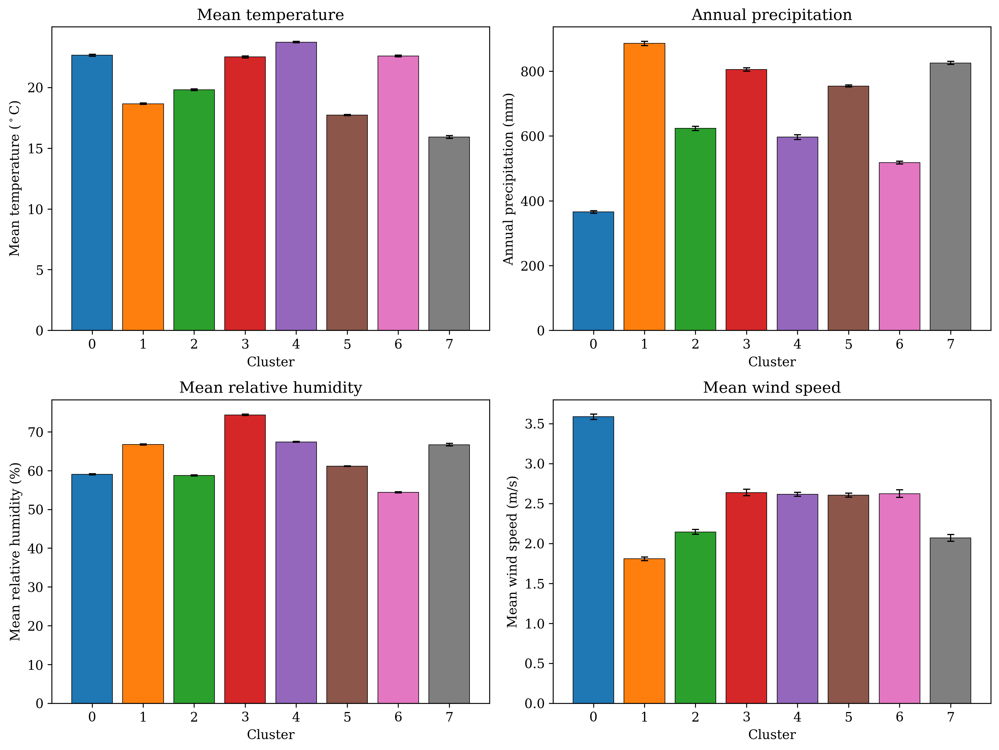
Climate gradients with region boundaries
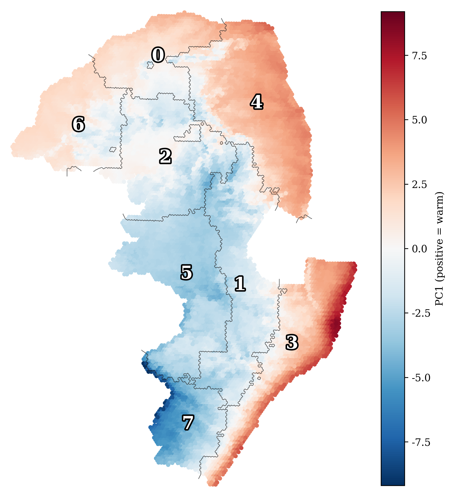
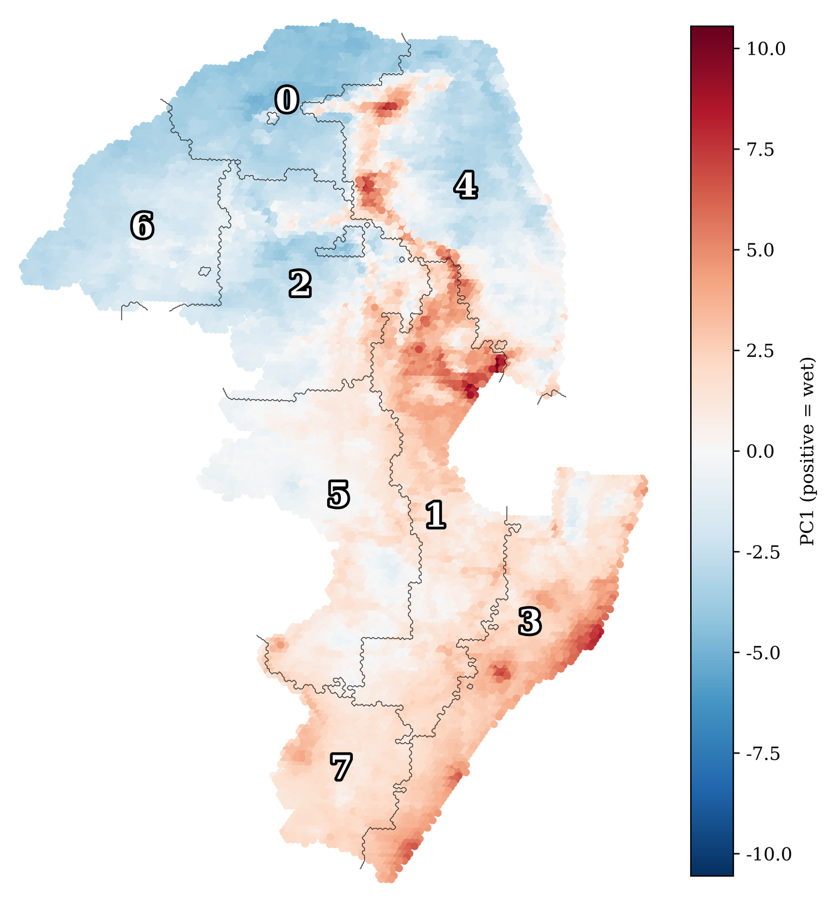
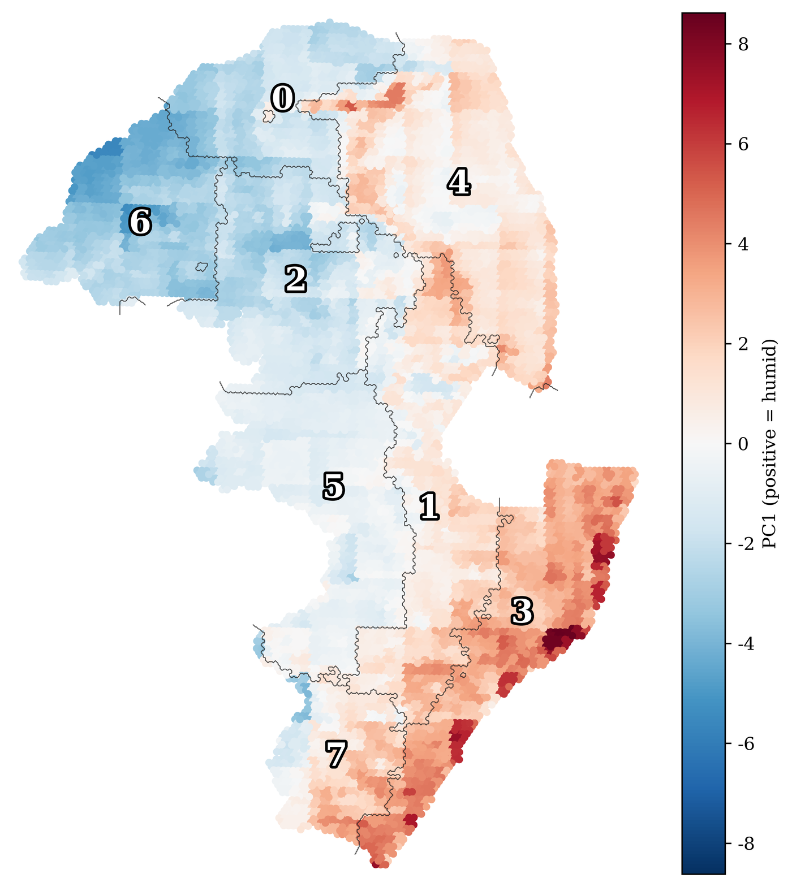
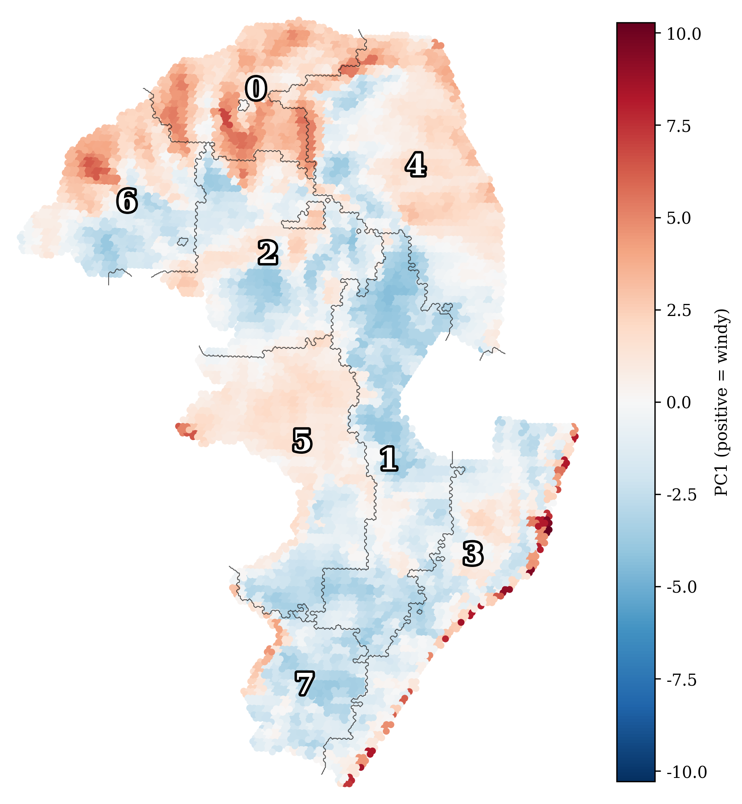
Each map is the first principal component of one climate domain across the study area, with the eight region boundaries and numbered centroids overlaid.
Every site keeps the region it was assigned, so the eight regions can be drawn back at the location of each site.
Explore
Eight regions on the map
No map, coordinates or boundaries were given to the model, yet the eight regions form coherent, contiguous bands across the forestry study area of eastern South Africa. Every site is drawn at its real latitude and longitude on the satellite map below. Colour the map by a climate variable to see how the regions differ.
A closer look
Inside the five learned numbers
The clustering works on the five numbers the autoencoder gives each site. Drawn back at the location of every site, each of the five traces a smooth gradient across the study area, even though the model saw only daily weather, with no location and no map. Each number is a learned axis of climate variation, and the eight regions are built from these five axes.
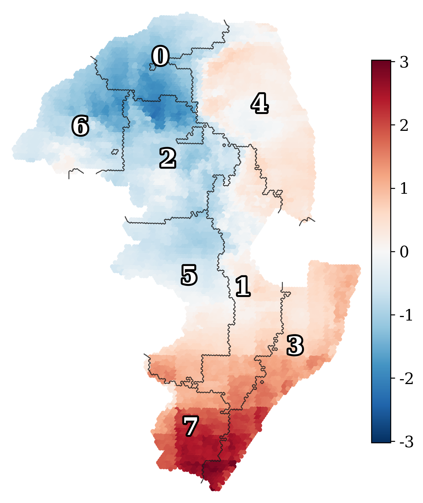
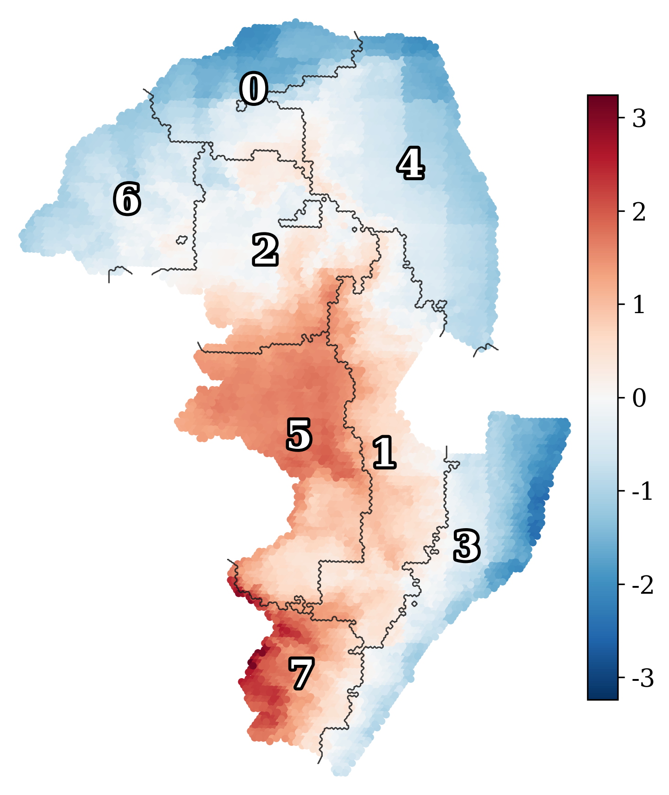
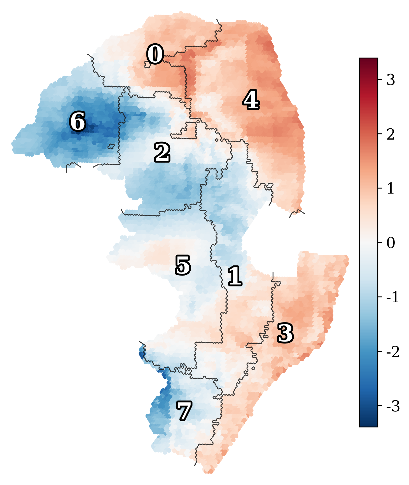
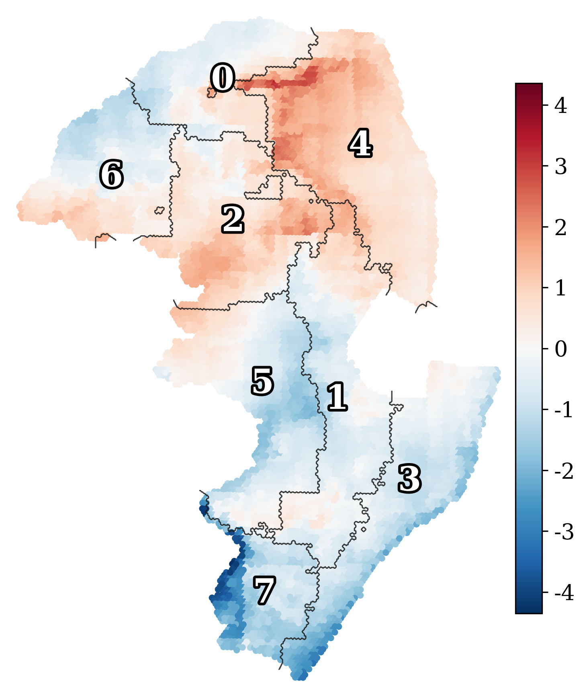
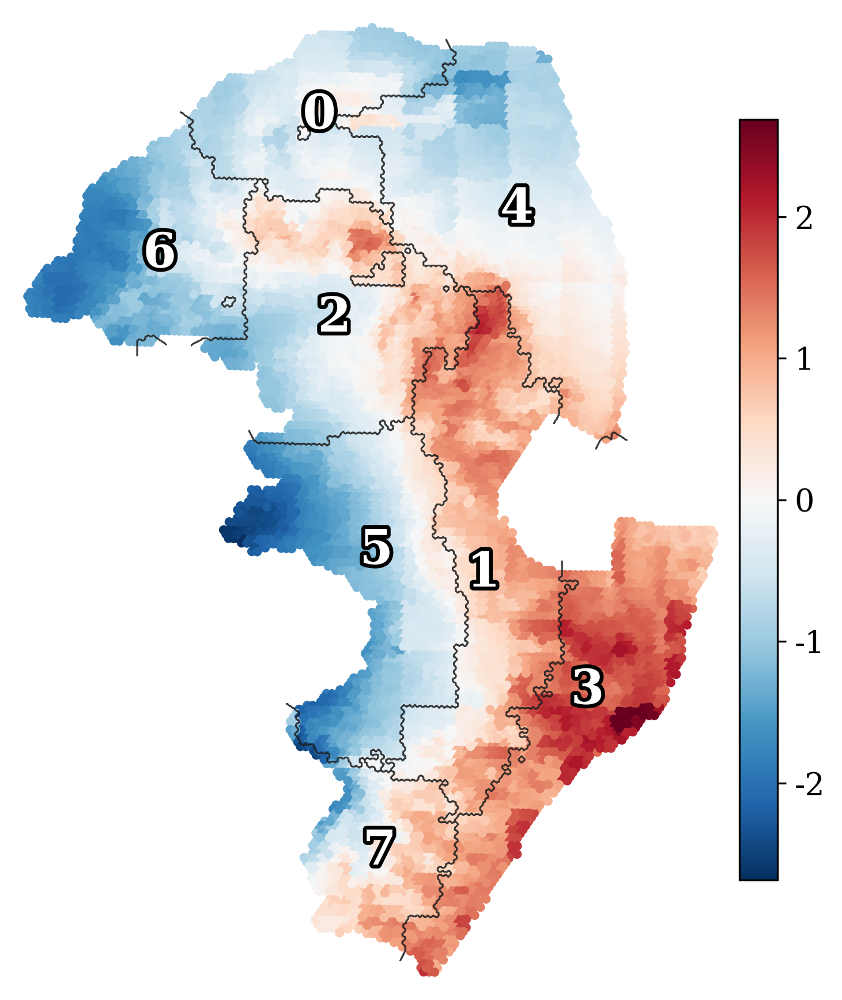
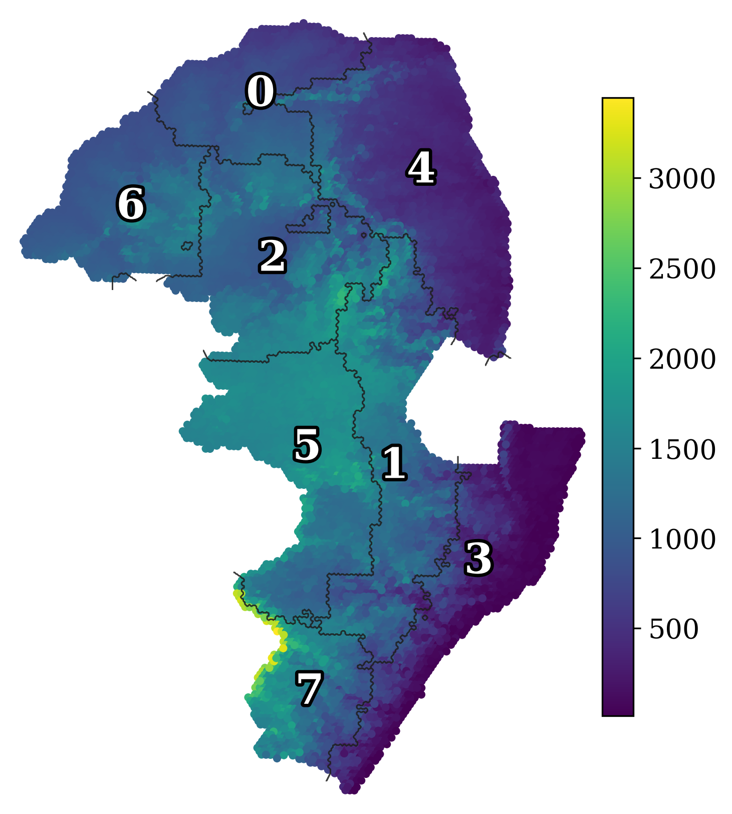
The five numbers recover elevation
Elevation was never shown to the model, yet the five numbers reconstruct it. A regression of elevation on the five dimensions explains 87% of the variation in site elevation, and a single dimension, z2, already correlates with elevation at 0.83. The terrain was recovered from the imprint that height leaves on daily temperature and humidity, the channels the model reads.
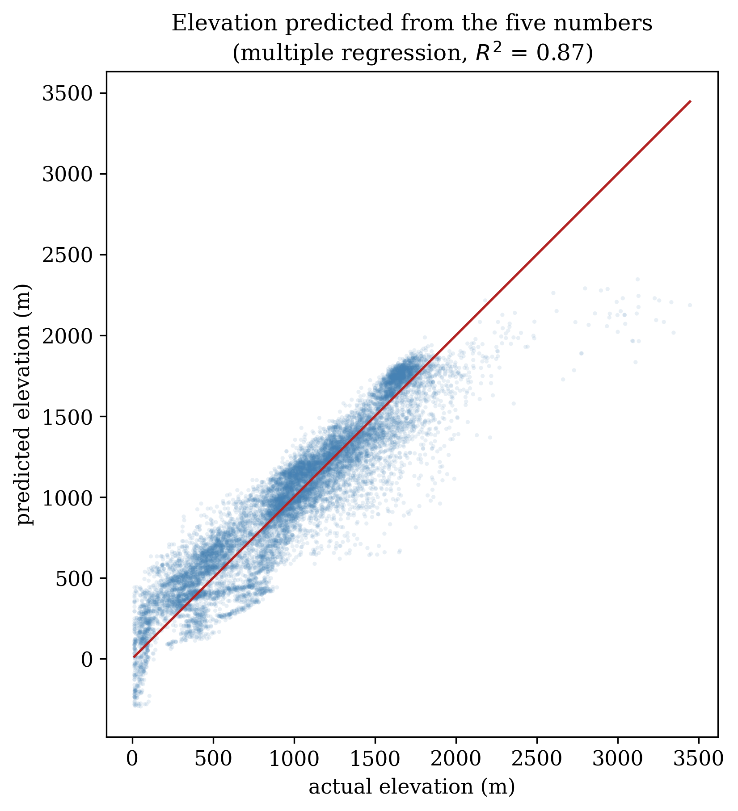
The five numbers come from the final autoencoder for all 14,191 sites. Elevation is held out and used only for this comparison.